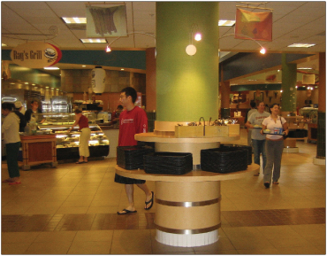

News |
Opinions |
||
Stanford Dining Exerts Monopoly Power |
D'Souza Captures the Conservative Spirit |
||
|
 Imagine, just for a moment, that you are a young and impressionable freshman. You are a proud American, of course (aren’t we all?), and believe strongly in free markets and capitalism, the foundations of
|
For those interested in the ideological roots of The Stanford Review, or the humor shared by conservatives on a number of current issues, Dinesh D’Souza’s book Letters to a Young Conservative is perfect. Letters is structured around a series of ‘letters’ written to a fictional Chris, a young moderate-to-right student on an elite college campus (a character with whom I share particular affinity). |
||
| Congressman Speaks on Legislature, Judiciary | A Brown Man's Praise of American Culture | ||
|
On May 9th, the Honorable Jim Sensenbrenner, a Congressman representing the Fifth Congressional District of Wisconsin, spoke to a small audience about his experiences in the ongoing fight between the legislature and judiciary. |
Twinkie. Banana. Oreo. These are words to describe people of an ethnic background (in these cases, Asian and Black) who have abandoned the culture of their mother country and have been “whitewashed.” But what does culture really mean? Is it always tied to race? |
||